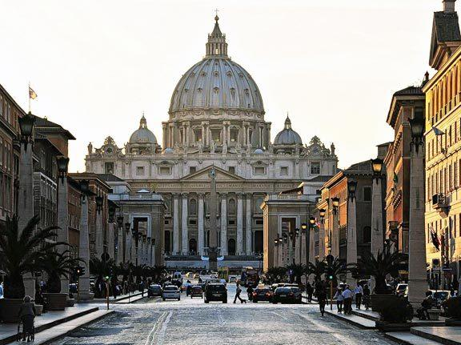
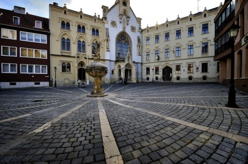
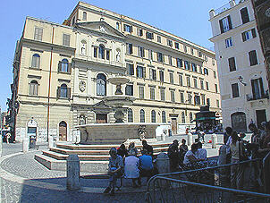
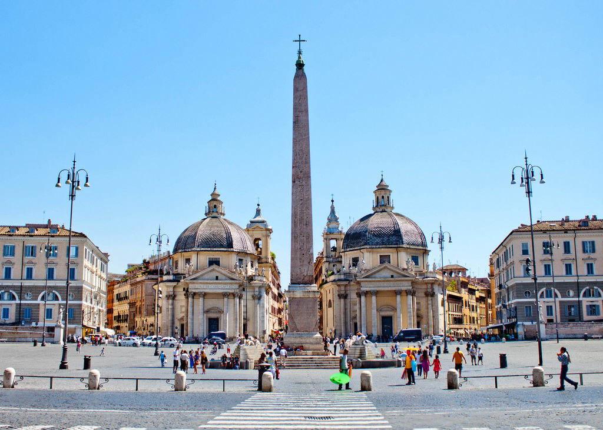
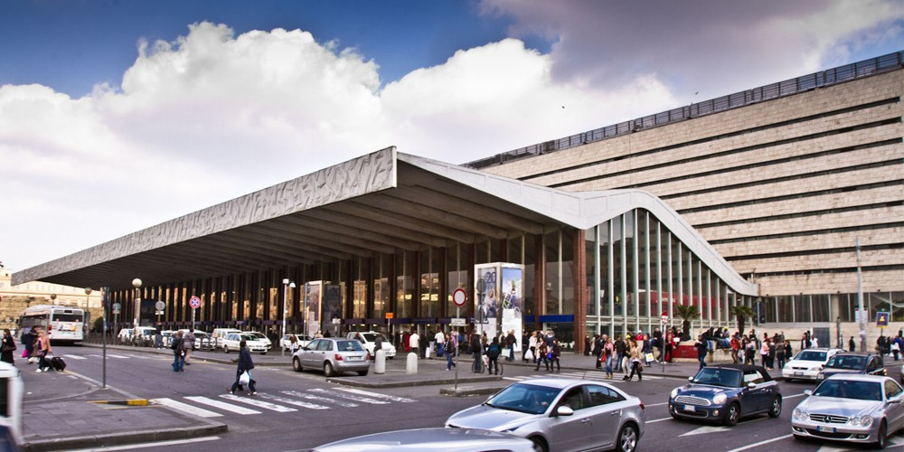

Neighborhoods
Vatican City
Vatican City is technically a sovereign state, although in practice it is just another part of Rome. The Vatican Museums, St. Peter's, and the Vatican Gardens take up most of the land area, and the popes have lived here for 6 centuries. The neighborhood north of the Vatican called "Borgo Pio" contains some good hotels (and several bad ones), but it is removed from the more happening scene of ancient and Renaissance Rome and getting to and from those areas can be time-consuming. Borgo Pio is also rather dull at night and contains few, if any, of Rome's finest restaurants. The white-collar Prati district, a middle-class suburb just east of the Vatican, is possibly a better choice, thanks to its smattering of affordable hotels, its shopping streets, and the fact that it boasts some excellent places to eat.
Centro Storico
One of the most desirable (and busiest) areas of Rome, the Centro Storico ("Historic Center") is a maze of narrow streets and cobbled alleys dating from the Middle Ages, and filled with churches and palaces built during the Renaissance and baroque eras. The only way to explore it is on foot. Its heart is Piazza Navona, built over Emperor Domitian's stadium and bustling with sidewalk cafes, palazzi, street artists, musicians, and pickpockets.
Rivaling Piazza Navona in general activity, the cafe scene, and the nightlife is the area around the Pantheon, which remains from ancient Roman times and is surrounded by a district built much later. South of Corso Vittorio Emanuele and centered on Piazza Farnese and the square of Campo de' Fiori, many buildings in this area were constructed in Renaissance times as private homes. West of Via Arenula lies one of the city's most intriguing districts, the old Jewish Ghetto, where the increasingly fashionable dining options far outnumber the hotels.
Monti
Although, Monti no longer the heart of the city, this is where Rome began, with the Colosseum, Palatine Hill, Roman Forum, Imperial Forums, and Circus Maximus. This area offers only a few hotels most of them inexpensive to moderate in price and not a lot of great restaurants. Many restaurant owners have their eyes on the cash register and the tour bus crowd, whose passengers are often herded in and out of these restaurants so fast that they don't know whether the food is any good. Just beyond the Circus Maximus is the Aventine Hill, south of the Palatine and close to the Tiber, now a leafy and rather posh residential quarter with great city views. You will get much more of a neighborhood feel if you stay in Monti (Rome's oldest rione, or quarter) or Celio. Both also have good dining, aimed at locals as well as visitors, and Monti, especially, has plenty of life from aperitivo o'clock and into the wee hours of the night.
Tridente
The Tridente is the complex of roads formed by three straight streets of Rome, departing from Piazza del Popolo and diverging southward, taking the shape of a trident.The northern part of Rome's center is sometimes known as the Tridente on account of the trident shape of the roads leading down from the apex of Piazza del Popolo-Via di Ripetta, Via del Corso, and Via del Babuino. The star here is unquestionably Piazza di Spagna, which attracts Romans and tourists alike to idly sit on its celebrated Spanish Steps. Some of Rome's most upscale shopping streets fan out from here, including Via Condotti. In fact, this is the most upscale part of Rome, full of expensive hotels, designer boutiques, and chic restaurants.
Termini
The main train station, Stazione Termini, adjoins Piazza della Repubblica, and is for many visitors their first introduction to Rome. Much of the area is seedy and filled with gas fumes from all the buses and cars, plus a fair share of weirdos. If you stay here, you might not get typical Rome charm, but you'll have a lot of affordable options and a convenient location, near the transportation hub of the city and not far from ancient Rome. There is a fair amount to see here, including the Basilica di Santa Maria Maggiore, the artifacts at Palazzo Massimo alle Terme, and the Baths of Diocletian.
The neighborhoods on either side of Termini (Esquilino and Tiburtino) have been slowly cleaning up, and some streets are now attractive. Most budget hotels on the Via Marsala side of the station occupy a floor or more of a palazzo (palace); many of their entryways are drab, although upstairs they are often charming or at least clean and livable. In the area to the left of the station as you exit, the streets are wider, the traffic is heavier, and the noise level is higher. The area requires you to take just a little caution late at night.